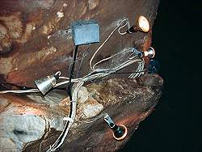
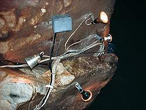

Der professionelle Ausbau von Schauhöhlen
Überall auf der Welt werden Höhlen erschlossen, um sie für Touristen geeignet zu machen. Wege werden gebaut und elektrisches Licht wird installiert. Diese Arbeiten werden in Abhängigkeit von den lokalen Traditionen und wahrscheinlich auch den lokalen Gesetzen durchgeführt. In einigen Ländern gibt es Institutionen, die für die Sicherheit der Besucher verantwortlich sind und die Installationen kontrollieren. Es gibt Höhlen mit sehr wenig Installationen, die etwas rau sind und wahrscheinlich nur für körperlich fitte Besucher geeignet sind. Aber es gibt auch Höhlen, die sehr gut ausgebaut sind, manchmal sogar ohne Rücksicht auf die Umwelt.
Auf dieser Seite haben wir einige Beispiele für erstaunliche Erschließungsergebnisse gesammelt. Sie liegen irgendwo zwischen lustig und erschreckend. Aber sehen Sie selbst.

 

Und ein letztes Wort: Auf dieser Seite befinden sich viele Bilder aus Australien.
Das bedeutet nicht, dass australische Höhlen unsicher sind oder ähnliches.
Wir haben uns sicher gefühlt und unsere Besuche genossen.
Es ist nur ein Zufall, dass die lustigsten Bilder, die wir zu diesem Thema gefunden haben, aus dieser Serie stammen.
Wir haben Ähnliches und Schlimmeres überall auf der Welt gesehen.
Dennoch wirkt es eher seltsam, wenn man dies in westlichen High-Tech-Ländern wie Frankreich, Belgien, Deutschland oder Australien sieht.
Einige östliche Länder haben dieses Problem nicht: die meisten Höhlen in Rumänien haben kein elektrisches Licht......

 Auf Google nach "Der professionelle Ausbau von Schauhöhlen" suchen...
Auf Google nach "Der professionelle Ausbau von Schauhöhlen" suchen...
 Index
Index Themen
Themen Hierarchisch
Hierarchisch Länder
Länder Karten
Karten Suche
Suche{kind=link}
{kind=link}
{kind=link}